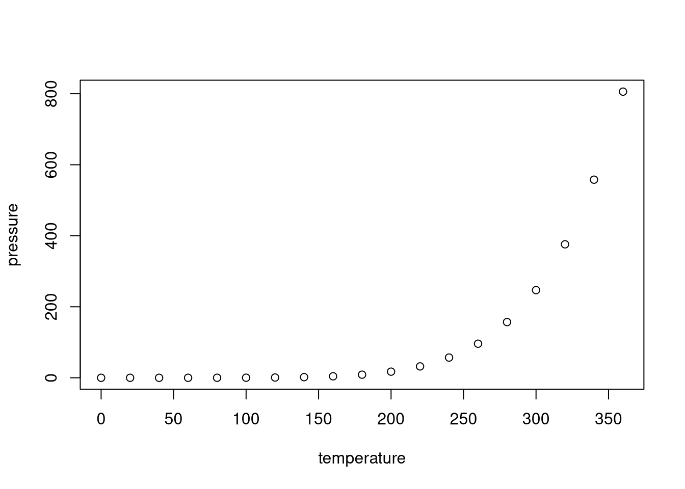

Last updated: 2023-03-14
Checks: 7 0
Knit directory: advanz4/
This reproducible R Markdown analysis was created with workflowr (version 1.7.0). The Checks tab describes the reproducibility checks that were applied when the results were created. The Past versions tab lists the development history.
Great! Since the R Markdown file has been committed to the Git repository, you know the exact version of the code that produced these results.
Great job! The global environment was empty. Objects defined in the global environment can affect the analysis in your R Markdown file in unknown ways. For reproduciblity it’s best to always run the code in an empty environment.
The command set.seed(20211203) was run prior to running the code in the R Markdown file. Setting a seed ensures that any results that rely on randomness, e.g. subsampling or permutations, are reproducible.
Great job! Recording the operating system, R version, and package versions is critical for reproducibility.
Nice! There were no cached chunks for this analysis, so you can be confident that you successfully produced the results during this run.
Great job! Using relative paths to the files within your workflowr project makes it easier to run your code on other machines.
Great! You are using Git for version control. Tracking code development and connecting the code version to the results is critical for reproducibility.
The results in this page were generated with repository version bb21c7f. See the Past versions tab to see a history of the changes made to the R Markdown and HTML files.
Note that you need to be careful to ensure that all relevant files for the analysis have been committed to Git prior to generating the results (you can use wflow_publish or wflow_git_commit). workflowr only checks the R Markdown file, but you know if there are other scripts or data files that it depends on. Below is the status of the Git repository when the results were generated:
Ignored files:
Ignored: .RData
Ignored: .Rhistory
Ignored: .Rproj.user/
Ignored: Metadata/MetadataManagement/Old_Metadata/
Ignored: analysis/.Rhistory
Ignored: analysis/010_Basic_Report_cache/
Ignored: analysis/420_Taxonomy_DA_cache/
Ignored: analysis/505_Adenovirus_Analysis_cache/
Ignored: analysis/510_Function_DA_cache/
Ignored: analysis/output/mre_data/SpeciesQuantification/Metaphlan3/NMDS/
Ignored: data/mre.rds
Note that any generated files, e.g. HTML, png, CSS, etc., are not included in this status report because it is ok for generated content to have uncommitted changes.
These are the previous versions of the repository in which changes were made to the R Markdown (analysis/304_Taxonomy_DA.Rmd) and HTML (docs/304_Taxonomy_DA.html) files. If you’ve configured a remote Git repository (see ?wflow_git_remote), click on the hyperlinks in the table below to view the files as they were in that past version.
| File | Version | Author | Date | Message |
|---|---|---|---|---|
| Rmd | ec0749d | cblazquez | 2023-03-13 | Added BMI tests for week 24 |
| html | 3fa20ba | cblazquez | 2022-06-02 | Added species v inflammation |
| html | 2a1fe84 | cblazquez | 2022-04-28 | Fixed rmd integration to wflow_build() |
| Rmd | e253850 | cblazquez | 2022-03-29 | worked on NMDS |
| html | e253850 | cblazquez | 2022-03-29 | worked on NMDS |
| html | c51687a | cblazquez | 2022-03-28 | fixed workflowrs and gene richness issues |
| html | 2040367 | cblazquez | 2022-03-25 | Added structure plan for code and added TP96 of CD4 and CD8 |
This section should explain anyithing that may have happened during the first fase of importing and formatting data, such as any modification or additional filtering step.
bucket <- "s3://mistral-wp6-advanz4/"
bucket_dir <- "metagenome/WMGS/"
# mymre <- aws.s3::s3readRDS(bucket = bucket, object = paste0(bucket_dir,"MREObject.rds"))
mymre <- readRDS(here::here("data","filt_mre.rds"))
metadata <- here::here("Metadata", "metadata.csv") %>%
read.csv()
metadata %>%
dplyr::select(record_id, TimePoint, CD4 ) record_id TimePoint CD4
1 A001 0 68.0
2 A001 24 262.0
3 A001 48 282.0
4 A001 96 NA
5 A002 0 3.0
6 A002 24 148.0
7 A002 48 185.0
8 A002 96 NA
9 A006 0 54.0
10 A006 24 240.0
11 A006 48 237.0
12 A008 0 10.0
13 A008 24 173.0
14 A008 48 182.0
15 A008 96 NA
16 A009 0 13.0
17 A009 24 162.0
18 A009 48 196.0
19 A009 96 NA
20 A011 0 23.0
21 A011 24 229.0
22 A011 48 333.0
23 A011 96 NA
24 A012 0 67.0
25 A012 24 234.0
26 A012 48 266.0
27 A012 96 NA
28 A013 0 39.0
29 A013 24 151.0
30 A013 48 138.0
31 A013 96 NA
32 A016 0 82.0
33 A016 24 204.0
34 A016 48 262.0
35 A017 0 81.0
36 A017 24 393.0
37 A017 48 416.0
38 A018 0 12.0
39 A018 48 240.0
40 A018 96 NA
41 A020 0 52.0
42 A020 24 182.0
43 A020 48 203.0
44 A020 96 NA
45 A021 0 113.0
46 A021 24 314.0
47 A021 48 302.0
48 A021 96 NA
49 A022 0 7.0
50 A022 24 100.0
51 A022 48 165.0
52 A022 96 NA
53 A023 0 3.0
54 A023 24 25.0
55 A023 48 20.0
56 A023 96 NA
57 A024 0 42.0
58 A024 24 321.0
59 A024 48 370.0
60 A024 96 NA
61 A028 0 77.0
62 A028 24 347.0
63 A028 48 295.0
64 A028 96 NA
65 A029 0 35.0
66 A029 24 260.0
67 A029 48 NA
68 A029 96 NA
69 A030 0 31.0
70 A030 48 714.0
71 A030 96 NA
72 A031 0 17.0
73 A031 24 116.0
74 A031 48 178.0
75 A031 96 NA
76 A032 0 8.0
77 A032 24 107.0
78 A032 48 165.0
79 A033 0 18.0
80 A033 24 106.0
81 A033 48 168.0
82 A033 96 NA
83 A034 0 100.0
84 A034 24 311.0
85 A034 48 342.0
86 A034 96 NA
87 A036 0 2.0
88 A036 24 89.0
89 A036 48 192.0
90 A036 96 NA
91 A037 0 8.0
92 A037 24 74.0
93 A037 48 107.0
94 A037 96 NA
95 A038 0 8.0
96 A038 48 218.0
97 A038 96 NA
98 B004 0 8.0
99 B004 48 316.0
100 B004 96 NA
101 B005 0 4.0
102 B005 24 45.0
103 B005 48 72.0
104 B005 96 NA
105 B007 0 42.0
106 B007 24 310.0
107 B007 48 365.0
108 B007 96 NA
109 C002 0 17.4
110 C002 48 510.0
111 C005 0 15.0
112 C005 48 132.0
113 C006 0 28.0
114 C006 48 256.0
115 C011 0 33.0
116 C011 48 377.0
117 C011 96 NA
118 C014 0 37.0
119 C014 48 337.0
120 D001 0 57.0
121 D001 48 89.4
122 D001 96 NA
123 D004 0 17.4
124 D004 48 152.6
125 D005 0 3.5
126 D005 24 141.0
127 D005 48 159.6
128 D005 96 NA
129 D007 0 74.1
130 D007 24 213.5
131 D007 48 292.8
132 D007 96 NA
133 D008 0 0.0
134 D008 48 78.6
135 D008 96 NA
136 D009 0 17.6
137 D009 24 156.0
138 D009 48 435.6
139 D009 96 NA
140 D010 0 57.0
141 D010 24 173.6
142 D010 48 246.1
143 D010 96 NA
144 D011 0 88.2
145 D011 24 283.2
146 D011 48 300.0
147 D011 96 NA
148 D012 0 78.4
149 D012 24 167.4
150 D012 48 195.0
151 D012 96 NA
152 D013 0 24.2
153 D013 24 132.0
154 D013 48 156.1
155 D013 96 NA
156 D014 0 228.8
157 D014 24 385.0
158 D014 48 385.2
159 D014 96 NA
160 D015 0 19.5
161 D015 24 110.4
162 D015 48 100.8
163 D015 96 NA
164 E001 0 60.0
165 E001 48 160.0
166 E001 96 NA
167 E004 0 10.0
168 E004 48 210.0
169 E004 96 NA
170 E005 0 50.0
171 E005 48 420.0
172 E005 96 NA
173 E006 0 10.0
174 E006 48 310.0
175 E006 96 NA
176 E008 0 10.0
177 E008 48 650.0
178 E008 96 NA
179 E010 0 100.0
180 E010 48 200.0
181 E010 96 NA
182 E011 0 40.0
183 E011 48 180.0
184 E011 96 NA
185 E013 0 70.0
186 E013 24 240.0
187 E013 48 370.0
188 E013 96 NA
189 E015 0 100.0
190 E015 24 360.0
191 E015 48 530.0
192 E015 96 NA
193 E016 0 70.0
194 E016 24 140.0
195 E016 48 140.0
196 E016 96 NA
197 E017 0 110.0
198 E017 24 200.0
199 E017 48 190.0
200 E017 96 NA
201 F001 0 40.0
202 F001 48 97.0
203 F001 96 NA
204 F002 0 30.0
205 F002 48 318.0
206 F002 96 NA
207 F003 0 67.0
208 F003 48 622.0
209 F003 96 NA
210 A001 0 68.0
211 A001 24 262.0
212 A001 48 282.0
213 A001 96 NA
214 A002 0 3.0
215 A002 24 148.0
216 A002 48 185.0
217 A002 96 NA
218 A006 0 54.0
219 A006 24 240.0
220 A006 48 237.0
221 A008 0 10.0
222 A008 24 173.0
223 A008 48 182.0
224 A008 96 NA
225 A009 0 13.0
226 A009 24 162.0
227 A009 48 196.0
228 A009 96 NA
229 A011 0 23.0
230 A011 24 229.0
231 A011 48 333.0
232 A011 96 NA
233 A012 0 67.0
234 A012 24 234.0
235 A012 48 266.0
236 A012 96 NA
237 A013 0 39.0
238 A013 24 151.0
239 A013 48 138.0
240 A013 96 NA
241 A016 0 82.0
242 A016 24 204.0
243 A016 48 262.0
244 A017 0 81.0
245 A017 24 393.0
246 A017 48 416.0
247 A020 0 52.0
248 A020 24 182.0
249 A020 48 203.0
250 A020 96 NA
251 A021 0 113.0
252 A021 24 314.0
253 A021 48 302.0
254 A021 96 NA
255 A022 0 7.0
256 A022 24 100.0
257 A022 48 165.0
258 A022 96 NA
259 A023 0 3.0
260 A023 24 25.0
261 A023 48 20.0
262 A023 96 NA
263 A024 0 42.0
264 A024 24 321.0
265 A024 48 370.0
266 A024 96 NA
267 A028 0 77.0
268 A028 24 347.0
269 A028 48 295.0
270 A028 96 NA
271 A029 0 35.0
272 A029 24 260.0
273 A029 48 NA
274 A029 96 NA
275 A031 0 17.0
276 A031 24 116.0
277 A031 48 178.0
278 A031 96 NA
279 A032 0 8.0
280 A032 24 107.0
281 A032 48 165.0
282 A033 0 18.0
283 A033 24 106.0
284 A033 48 168.0
285 A033 96 NA
286 A034 0 100.0
287 A034 24 311.0
288 A034 48 342.0
289 A034 96 NA
290 A036 0 2.0
291 A036 24 89.0
292 A036 48 192.0
293 A036 96 NA
294 A037 0 8.0
295 A037 24 74.0
296 A037 48 107.0
297 A037 96 NA
298 B005 0 4.0
299 B005 24 45.0
300 B005 48 72.0
301 B005 96 NA
302 B007 0 42.0
303 B007 24 310.0
304 B007 48 365.0
305 B007 96 NA
306 D005 0 3.5
307 D005 24 141.0
308 D005 48 159.6
309 D005 96 NA
310 D007 0 74.1
311 D007 24 213.5
312 D007 48 292.8
313 D007 96 NA
314 D009 0 17.6
315 D009 24 156.0
316 D009 48 435.6
317 D009 96 NA
318 D010 0 57.0
319 D010 24 173.6
320 D010 48 246.1
321 D010 96 NA
322 D011 0 88.2
323 D011 24 283.2
324 D011 48 300.0
325 D011 96 NA
326 D012 0 78.4
327 D012 24 167.4
328 D012 48 195.0
329 D012 96 NA
330 D013 0 24.2
331 D013 24 132.0
332 D013 48 156.1
333 D013 96 NA
334 D014 0 228.8
335 D014 24 385.0
336 D014 48 385.2
337 D014 96 NA
338 D015 0 19.5
339 D015 24 110.4
340 D015 48 100.8
341 D015 96 NA
342 E013 0 70.0
343 E013 24 240.0
344 E013 48 370.0
345 E013 96 NA
346 E015 0 100.0
347 E015 24 360.0
348 E015 48 530.0
349 E015 96 NA
350 E016 0 70.0
351 E016 24 140.0
352 E016 48 140.0
353 E016 96 NA
354 E017 0 110.0
355 E017 24 200.0
356 E017 48 190.0
357 E017 96 NA
358 A001 0 68.0
359 A001 24 262.0
360 A001 48 282.0
361 A001 96 NA
362 A002 0 3.0
363 A002 24 148.0
364 A002 48 185.0
365 A002 96 NA
366 A006 0 54.0
367 A006 24 240.0
368 A006 48 237.0
369 A008 0 10.0
370 A008 24 173.0
371 A008 48 182.0
372 A008 96 NA
373 A009 0 13.0
374 A009 24 162.0
375 A009 48 196.0
376 A009 96 NA
377 A011 0 23.0
378 A011 24 229.0
379 A011 48 333.0
380 A011 96 NA
381 A012 0 67.0
382 A012 24 234.0
383 A012 48 266.0
384 A012 96 NA
385 A013 0 39.0
386 A013 24 151.0
387 A013 48 138.0
388 A013 96 NA
389 A016 0 82.0
390 A016 24 204.0
391 A016 48 262.0
392 A017 0 81.0
393 A017 24 393.0
394 A017 48 416.0
395 A018 0 12.0
396 A018 48 240.0
397 A018 96 NA
398 A020 0 52.0
399 A020 24 182.0
400 A020 48 203.0
401 A020 96 NA
402 A021 0 113.0
403 A021 24 314.0
404 A021 48 302.0
405 A021 96 NA
406 A022 0 7.0
407 A022 24 100.0
408 A022 48 165.0
409 A022 96 NA
410 A023 0 3.0
411 A023 24 25.0
412 A023 48 20.0
413 A023 96 NA
414 A024 0 42.0
415 A024 24 321.0
416 A024 48 370.0
417 A024 96 NA
418 A028 0 77.0
419 A028 24 347.0
420 A028 48 295.0
421 A028 96 NA
422 A029 0 35.0
423 A029 24 260.0
424 A029 48 NA
425 A029 96 NA
426 A030 0 31.0
427 A030 48 714.0
428 A030 96 NA
429 A031 0 17.0
430 A031 24 116.0
431 A031 48 178.0
432 A031 96 NA
433 A032 0 8.0
434 A032 24 107.0
435 A032 48 165.0
436 A033 0 18.0
437 A033 24 106.0
438 A033 48 168.0
439 A033 96 NA
440 A034 0 100.0
441 A034 24 311.0
442 A034 48 342.0
443 A034 96 NA
444 A036 0 2.0
445 A036 24 89.0
446 A036 48 192.0
447 A036 96 NA
448 A037 0 8.0
449 A037 24 74.0
450 A037 48 107.0
451 A037 96 NA
452 A038 0 8.0
453 A038 48 218.0
454 A038 96 NA
455 B004 0 8.0
456 B004 48 316.0
457 B004 96 NA
458 B005 0 4.0
459 B005 24 45.0
460 B005 48 72.0
461 B005 96 NA
462 B007 0 42.0
463 B007 24 310.0
464 B007 48 365.0
465 B007 96 NA
466 C002 0 17.4
467 C002 48 510.0
468 C005 0 15.0
469 C005 48 132.0
470 C006 0 28.0
471 C006 48 256.0
472 C011 0 33.0
473 C011 48 377.0
474 C011 96 NA
475 C014 0 37.0
476 C014 48 337.0
477 D001 0 57.0
478 D001 48 89.4
479 D001 96 NA
480 D004 0 17.4
481 D004 48 152.6
482 D005 0 3.5
483 D005 24 141.0
484 D005 48 159.6
485 D005 96 NA
486 D007 0 74.1
487 D007 24 213.5
488 D007 48 292.8
489 D007 96 NA
490 D008 0 0.0
491 D008 48 78.6
492 D008 96 NA
493 D009 0 17.6
494 D009 24 156.0
495 D009 48 435.6
496 D009 96 NA
497 D010 0 57.0
498 D010 24 173.6
499 D010 48 246.1
500 D010 96 NA
501 D011 0 88.2
502 D011 24 283.2
503 D011 48 300.0
504 D011 96 NA
505 D012 0 78.4
506 D012 24 167.4
507 D012 48 195.0
508 D012 96 NA
509 D013 0 24.2
510 D013 24 132.0
511 D013 48 156.1
512 D013 96 NA
513 D014 0 228.8
514 D014 24 385.0
515 D014 48 385.2
516 D014 96 NA
517 D015 0 19.5
518 D015 24 110.4
519 D015 48 100.8
520 D015 96 NA
521 E001 0 60.0
522 E001 48 160.0
523 E001 96 NA
524 E004 0 10.0
525 E004 48 210.0
526 E004 96 NA
527 E005 0 50.0
528 E005 48 420.0
529 E005 96 NA
530 E006 0 10.0
531 E006 48 310.0
532 E006 96 NA
533 E008 0 10.0
534 E008 48 650.0
535 E008 96 NA
536 E010 0 100.0
537 E010 48 200.0
538 E010 96 NA
539 E011 0 40.0
540 E011 48 180.0
541 E011 96 NA
542 E013 0 70.0
543 E013 24 240.0
544 E013 48 370.0
545 E013 96 NA
546 E015 0 100.0
547 E015 24 360.0
548 E015 48 530.0
549 E015 96 NA
550 E016 0 70.0
551 E016 24 140.0
552 E016 48 140.0
553 E016 96 NA
554 E017 0 110.0
555 E017 24 200.0
556 E017 48 190.0
557 E017 96 NA
558 F001 0 40.0
559 F001 48 97.0
560 F001 96 NA
561 F002 0 30.0
562 F002 48 318.0
563 F002 96 NA
564 F003 0 67.0
565 F003 48 622.0
566 F003 96 NA
567 A001 0 68.0
568 A001 24 262.0
569 A001 48 282.0
570 A001 96 NA
571 A002 0 3.0
572 A002 24 148.0
573 A002 48 185.0
574 A002 96 NA
575 A008 0 10.0
576 A008 24 173.0
577 A008 48 182.0
578 A008 96 NA
579 A009 0 13.0
580 A009 24 162.0
581 A009 48 196.0
582 A009 96 NA
583 A011 0 23.0
584 A011 24 229.0
585 A011 48 333.0
586 A011 96 NA
587 A012 0 67.0
588 A012 24 234.0
589 A012 48 266.0
590 A012 96 NA
591 A013 0 39.0
592 A013 24 151.0
593 A013 48 138.0
594 A013 96 NA
595 A018 0 12.0
596 A018 48 240.0
597 A018 96 NA
598 A020 0 52.0
599 A020 24 182.0
600 A020 48 203.0
601 A020 96 NA
602 A021 0 113.0
603 A021 24 314.0
604 A021 48 302.0
605 A021 96 NA
606 A022 0 7.0
607 A022 24 100.0
608 A022 48 165.0
609 A022 96 NA
610 A023 0 3.0
611 A023 24 25.0
612 A023 48 20.0
613 A023 96 NA
614 A024 0 42.0
615 A024 24 321.0
616 A024 48 370.0
617 A024 96 NA
618 A028 0 77.0
619 A028 24 347.0
620 A028 48 295.0
621 A028 96 NA
622 A029 0 35.0
623 A029 24 260.0
624 A029 48 NA
625 A029 96 NA
626 A030 0 31.0
627 A030 48 714.0
628 A030 96 NA
629 A031 0 17.0
630 A031 24 116.0
631 A031 48 178.0
632 A031 96 NA
633 A033 0 18.0
634 A033 24 106.0
635 A033 48 168.0
636 A033 96 NA
637 A034 0 100.0
638 A034 24 311.0
639 A034 48 342.0
640 A034 96 NA
641 A036 0 2.0
642 A036 24 89.0
643 A036 48 192.0
644 A036 96 NA
645 A037 0 8.0
646 A037 24 74.0
647 A037 48 107.0
648 A037 96 NA
649 A038 0 8.0
650 A038 48 218.0
651 A038 96 NA
652 B004 0 8.0
653 B004 48 316.0
654 B004 96 NA
655 B005 0 4.0
656 B005 24 45.0
657 B005 48 72.0
658 B005 96 NA
659 B007 0 42.0
660 B007 24 310.0
661 B007 48 365.0
662 B007 96 NA
663 C011 0 33.0
664 C011 48 377.0
665 C011 96 NA
666 D001 0 57.0
667 D001 48 89.4
668 D001 96 NA
669 D005 0 3.5
670 D005 24 141.0
671 D005 48 159.6
672 D005 96 NA
673 D007 0 74.1
674 D007 24 213.5
675 D007 48 292.8
676 D007 96 NA
677 D008 0 0.0
678 D008 48 78.6
679 D008 96 NA
680 D009 0 17.6
681 D009 24 156.0
682 D009 48 435.6
683 D009 96 NA
684 D010 0 57.0
685 D010 24 173.6
686 D010 48 246.1
687 D010 96 NA
688 D011 0 88.2
689 D011 24 283.2
690 D011 48 300.0
691 D011 96 NA
692 D012 0 78.4
693 D012 24 167.4
694 D012 48 195.0
695 D012 96 NA
696 D013 0 24.2
697 D013 24 132.0
698 D013 48 156.1
699 D013 96 NA
700 D014 0 228.8
701 D014 24 385.0
702 D014 48 385.2
703 D014 96 NA
704 D015 0 19.5
705 D015 24 110.4
706 D015 48 100.8
707 D015 96 NA
708 E001 0 60.0
709 E001 48 160.0
710 E001 96 NA
711 E004 0 10.0
712 E004 48 210.0
713 E004 96 NA
714 E005 0 50.0
715 E005 48 420.0
716 E005 96 NA
717 E006 0 10.0
718 E006 48 310.0
719 E006 96 NA
720 E008 0 10.0
721 E008 48 650.0
722 E008 96 NA
723 E010 0 100.0
724 E010 48 200.0
725 E010 96 NA
726 E011 0 40.0
727 E011 48 180.0
728 E011 96 NA
729 E013 0 70.0
730 E013 24 240.0
731 E013 48 370.0
732 E013 96 NA
733 E015 0 100.0
734 E015 24 360.0
735 E015 48 530.0
736 E015 96 NA
737 E016 0 70.0
738 E016 24 140.0
739 E016 48 140.0
740 E016 96 NA
741 E017 0 110.0
742 E017 24 200.0
743 E017 48 190.0
744 E017 96 NA
745 F001 0 40.0
746 F001 48 97.0
747 F001 96 NA
748 F002 0 30.0
749 F002 48 318.0
750 F002 96 NA
751 F003 0 67.0
752 F003 48 622.0
753 F003 96 NA# Any homebrew support function that may be written will be placed hereHere we will leave all results regarding DA. In case we analyze it by more than one approach (e.g, wilcoxon, ANCOM, etc), each will have it’s own subsection)

| Version | Author | Date |
|---|---|---|
| 2040367 | cblazquez | 2022-03-25 |
Note that the echo = FALSE parameter was added to the code chunk to prevent printing of the R code that generated the plot.
sessionInfo()R version 4.0.5 (2021-03-31)
Platform: x86_64-redhat-linux-gnu (64-bit)
Running under: Fedora 34 (Workstation Edition)
Matrix products: default
BLAS/LAPACK: /usr/lib64/libflexiblas.so.3.1
locale:
[1] LC_CTYPE=en_US.UTF-8 LC_NUMERIC=C
[3] LC_TIME=en_US.UTF-8 LC_COLLATE=en_US.UTF-8
[5] LC_MONETARY=en_US.UTF-8 LC_MESSAGES=en_US.UTF-8
[7] LC_PAPER=en_US.UTF-8 LC_NAME=C
[9] LC_ADDRESS=C LC_TELEPHONE=C
[11] LC_MEASUREMENT=en_US.UTF-8 LC_IDENTIFICATION=C
attached base packages:
[1] stats graphics grDevices utils datasets methods base
other attached packages:
[1] forcats_0.5.1 stringr_1.4.0 dplyr_1.0.9 purrr_0.3.4
[5] readr_2.1.2 tidyr_1.2.0 tibble_3.1.7 ggplot2_3.3.6
[9] tidyverse_1.3.1 devtools_2.4.3 usethis_2.1.6 workflowr_1.7.0
loaded via a namespace (and not attached):
[1] httr_1.4.2 sass_0.4.1 pkgload_1.2.4 jsonlite_1.8.0
[5] here_1.0.1 modelr_0.1.8 bslib_0.3.1 brio_1.1.3
[9] assertthat_0.2.1 getPass_0.2-2 highr_0.9 cellranger_1.1.0
[13] yaml_2.3.5 remotes_2.4.2 sessioninfo_1.2.2 pillar_1.7.0
[17] backports_1.4.1 glue_1.6.2 digest_0.6.29 promises_1.2.0.1
[21] rvest_1.0.2 colorspace_2.0-3 htmltools_0.5.2 httpuv_1.6.5
[25] pkgconfig_2.0.3 broom_0.8.0 haven_2.5.0 scales_1.2.0
[29] processx_3.6.1 whisker_0.4 later_1.3.0 tzdb_0.3.0
[33] git2r_0.30.1 generics_0.1.2 ellipsis_0.3.2 cachem_1.0.6
[37] withr_2.5.0 cli_3.3.0 magrittr_2.0.3 crayon_1.5.1
[41] readxl_1.4.0 memoise_2.0.1 evaluate_0.15 ps_1.7.1
[45] fs_1.5.2 fansi_1.0.3 xml2_1.3.2 pkgbuild_1.3.1
[49] tools_4.0.5 prettyunits_1.1.1 hms_1.1.1 lifecycle_1.0.1
[53] reprex_2.0.1 munsell_0.5.0 callr_3.7.0 compiler_4.0.5
[57] jquerylib_0.1.4 rlang_1.0.2 grid_4.0.5 rstudioapi_0.13
[61] rmarkdown_2.14 testthat_3.1.4 gtable_0.3.0 DBI_1.1.3
[65] R6_2.5.1 lubridate_1.8.0 knitr_1.39 fastmap_1.1.0
[69] utf8_1.2.2 rprojroot_2.0.3 desc_1.4.1 stringi_1.7.6
[73] Rcpp_1.0.8.3 vctrs_0.4.1 dbplyr_2.2.0 tidyselect_1.1.2
[77] xfun_0.31